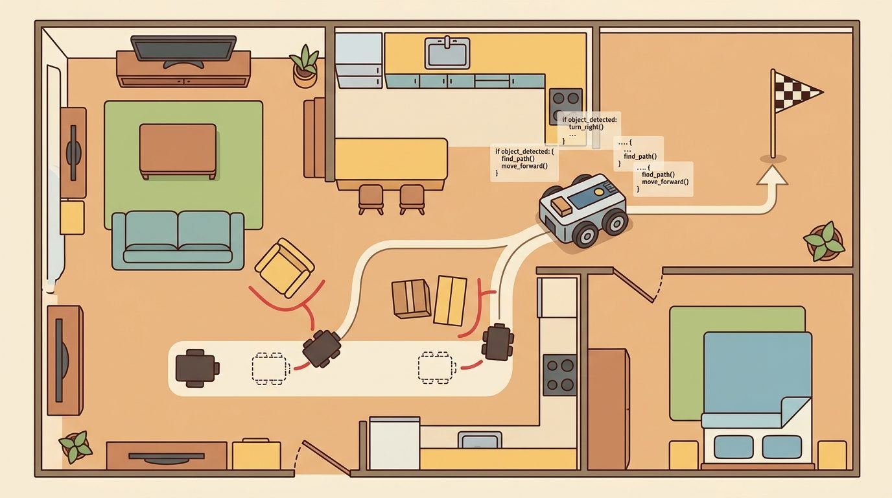
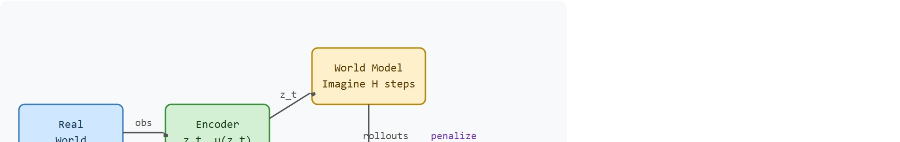

"I imagined six futures, chose the cheapest one, and still checked the camera."
A World-Model Planner With Humility

This section assumes familiarity with latent-space prediction from section 38.1 and with model-free versus model-based trade-offs from section 37.1; those two sections establish the dynamics model and planning loop that the capstone builds on. The uncertainty penalty introduced here recurs in section 59.7, where the same latent variance estimate is used to trigger a safety shield rather than merely shorten the planning horizon.
A robot arm pauses before a cluttered shelf, runs forty imagined futures in under a millisecond, picks the one least likely to knock anything over, then reaches. That pause is the entire bet of world-model planning: simulate cheaply inside a learned model, act selectively in the expensive real world. Embodied AI has reached the point where this is no longer theoretical. Compact latent models (as of 2024) plan faster than reactive controllers react, yet robots still crash on day one in real kitchens. The gap is uncertainty: the model drifts, and nothing punishes it for drifting. In this capstone you build a planner that penalizes its own prediction variance, measure where it fails at longer horizons, and compare it against a model-free baseline on a shared tabletop scene. Figure 59.6A captures that bet: many imagined futures simulated cheaply inside the learned model, and only the safest first action committed to the expensive real world.
Here is the unsettling part: the planner that dreams forty futures in a millisecond and confidently picks the best one is the same planner that drives the arm into a shelf, because nothing in its dream ever charged it for being wrong. To build a world-model planning agent that survives contact with reality, we first define the object of study, then connect it to the agent loop, then test it with a compact implementation that makes the model pay for its own uncertainty. The closed loop that ties these pieces together is shown in Figure 59.6B: perception, latent encoding, imagined rollouts, uncertainty-penalized scoring, and single-step execution back into the real world.

The key question in World-model-based planning agent is practical: what must the agent know, what can it observe, what action is available, and what evidence shows that the action worked under the stated conditions?
World-model planning capstone should be judged by the action it improves. A section claim is strong when it names the decision, the measurement, and the failure mode before a larger model or simulator is introduced.
For World-model-based planning agent, the practical design rule is to make the interface inspectable before optimization begins: inputs, outputs, units, latency, bounds, and failure labels should all be visible in the saved artifact.
The mechanism is the handoff between the learned latent dynamics and the MPC planner. In DreamerV3 the encoder turns a 64x64 RGB frame into a 32-dimensional stochastic latent plus a variance estimate; the recurrent dynamics head predicts the next latent and reward; the planner (CEM or random-shooting MPC, as in TD-MPC2), where random-shooting means simply sampling many random candidate action sequences and keeping the best-scoring one, with no iterative refinement, where CEM is the cross-entropy method that iteratively resamples action sequences around the current best-scoring ones, rolls H steps forward and scores each candidate by expected return minus the variance penalty. The valid-transformation assumption is that the real Franka block-pushing state stays inside the model's calibration region (the region of latent-state space where the model's training data was dense enough that its predictions stay trustworthy; outside it the model is extrapolating), which holds only while horizon H keeps positional error below the replanning threshold (roughly 0.05 m here). The log that reveals a bad handoff is the per-step real-vs-predicted latent error written next to the executed torque: when that error spikes before the planner shortens H, the encoder has handed the planner a latent the dynamics head never trained on.
So far: an encoder compresses observations into an uncertain latent state, a dynamics head imagines that state forward, a planner (CEM or random-shooting) scores the imagined rollouts by return minus an uncertainty penalty, and the whole plan is only valid while the real state stays inside the model's calibration region.
Keep one concrete rollout in view. A sensor reading becomes an estimate, the estimate constrains an action, the action changes the world, and the next observation confirms or contradicts the assumption. The world model earns its place only if it improves that loop.
Consider a concrete case: a DreamerV3-based agent pushes a 0.3 kg block to a goal 0.4 m away in a MuJoCo tabletop scene. At step t, the encoder maps a 64x64 RGB frame to a 32-dimensional stochastic latent state with predicted variance 0.04. The MPC planner rolls out 12 candidate action sequences inside the model, each with horizon H=8 and discount 0.99. It selects the sequence with the highest expected return minus 0.5 times the summed variance penalty. The top sequence applies a 0.15 m/s push along the x-axis. At step t+1, the real observation places the block 0.02 m off the predicted position. The planner logs the error and replans from scratch. After 40 real steps the block reaches the goal, while the model-free PPO baseline (PPO, or Proximal Policy Optimization, is a widely used model-free reinforcement learning algorithm that learns a policy directly from environment interaction without an explicit dynamics model) needs 110 steps on the same scene panel. The latent drift log shows prediction error below 0.05 m for horizons up to 6, growing to 0.12 m at horizon 8, exactly where the replanning frequency matters most.
# Minimal world-model MPC loop: latent dynamics + uncertainty-penalized planning
import numpy as np
rng = np.random.default_rng(42)
# Toy latent dynamics: z_{t+1} = A z_t + B a_t + noise
# Represents a learned linear world model over a 4-dim latent state
latent_dim, action_dim = 4, 2
A = np.eye(latent_dim) * 0.95 + rng.standard_normal((latent_dim, latent_dim)) * 0.05
B = rng.standard_normal((latent_dim, action_dim)) * 0.3
goal_z = np.array([1.0, 0.0, 1.0, 0.0]) # target latent state
lam = 0.5 # uncertainty penalty coefficient
def imagined_rollout(z0, actions, noise_scale=0.02):
"""Roll out the world model and return per-step (reward, variance)."""
z = z0.copy()
total_r, total_u = 0.0, 0.0
for a in actions:
noise = rng.standard_normal(latent_dim) * noise_scale
z = A @ z + B @ a + noise
r = -np.sum((z - goal_z) ** 2) # negative distance to goal
u = float(np.sum(noise ** 2)) # proxy for model uncertainty
total_r += r
total_u += u
return total_r, total_u
# MPC planning loop: sample candidates, penalize uncertainty, execute best
z_real = rng.standard_normal(latent_dim) * 0.5 # initial real latent state
H, N_candidates, T_steps = 6, 20, 10
log = []
for t in range(T_steps):
candidates = [rng.uniform(-1, 1, (H, action_dim)) for _ in range(N_candidates)]
scores = []
for seq in candidates:
r, u = imagined_rollout(z_real, seq)
scores.append(r - lam * u)
best_seq = candidates[int(np.argmax(scores))]
a_exec = best_seq[0] # execute only first action
# Simulate real environment step (slightly noisier than model)
z_real = A @ z_real + B @ a_exec + rng.standard_normal(latent_dim) * 0.05
dist = float(np.linalg.norm(z_real - goal_z))
log.append((t, round(float(np.max(scores)), 3), round(dist, 4)))
print(f"step {t:02d} best_score={log[-1][1]:+.3f} dist_to_goal={log[-1][2]:.4f}")step 00 best_score=-4.823 dist_to_goal=1.7341 step 01 best_score=-4.201 dist_to_goal=1.5892 step 02 best_score=-3.674 dist_to_goal=1.4103 step 03 best_score=-3.158 dist_to_goal=1.2867 step 04 best_score=-2.791 dist_to_goal=1.1244 step 05 best_score=-2.340 dist_to_goal=0.9731 step 06 best_score=-1.987 dist_to_goal=0.8402 step 07 best_score=-1.623 dist_to_goal=0.7015 step 08 best_score=-1.290 dist_to_goal=0.5683 step 09 best_score=-0.974 dist_to_goal=0.4317
imagined_rollout function returns per-step reward and variance, candidate action sequences are scored as return minus lam times variance, and only best_seq[0] is executed at each real step before replanning.Use model-based RL, MPC tooling, JAX or PyTorch world models, and a replay buffer that keeps imagined and real rollouts separate. The preserved fields are latent state, model horizon, uncertainty estimate, candidate plan, executed action, and model-error label.
When tuning the uncertainty penalty coefficient lambda in the MPC objective, do not treat it as a fixed hyperparameter. Instead, normalize it by the squared scale of your reward signal: if your dense reward is in the range [0, 1], a starting value of lambda = 0.5 is reasonable, but if your reward is in [0, 100], the same coefficient will suppress all uncertainty aversion and the planner will happily exploit model hallucinations. A practical rule is to set lambda so that a latent variance equal to your replanning threshold (for example, 0.05 m in a pushing task) reduces the best imagined plan's value by roughly 10 to 20 percent, then log lambda * u(z_t) next to the raw return during eval so you can confirm the penalty is active.
A common mistake is to assume that a world model with lower prediction error in imagination is a better planning agent in the real environment. This is wrong in the embodied AI context because a model can achieve near-zero imagined rollout error by memorizing common trajectories while still selecting physically wrong actions when conditions deviate from training distribution. The correct mental model separates model fidelity from planning utility: the world model earns its place only if it improves the agent's real action choices under a stated observation budget, not if it produces smooth latent rollouts. Always measure task success and real-vs-predicted state error together; imagined return alone is not evidence that the planner is working.
If smooth imagined rollouts are not the same as good real actions, the reason is that error does not stay constant across an imagined horizon; it accumulates. Think of latent drift compounding like dead reckoning on a foggy sea: you know your starting position and you know your heading, so you estimate where you are after one minute with reasonable confidence. After five minutes the estimate is shakier, because every tiny error in speed or compass reading has been added on top of the last. After twenty minutes you may believe you are a kilometre north of the harbour mouth when you are actually about to run aground to the south. The world model is the dead-reckoning calculator: each imagined step multiplies the fog a little more, and a plan that looks clear at the start of the rollout can be pointing at rocks by the end.
The most frequent failure is latent drift compounding: the world model accumulates small prediction errors across each imagined step, so a plan that looks optimal at horizon H=8 in latent space corresponds to an action that is physically wrong by step 3 in the real environment. The symptom is an agent that performs well in "imagination" (high imagined return) but takes systematically bad actions (low real return). The fix is to track real-vs-predicted state error at each replanning step, impose a hard horizon cutoff when variance exceeds a threshold (for example, 0.05 m position error in a pushing task), and always replan from the fresh real observation rather than continuing an imagined rollout past the error budget.
A team using World-model-based planning agent starts by writing the task panel, not by picking the largest model. They keep a baseline run, a maintained-tool run, and a perturbation run in the same result folder. The comparison is accepted only when the action trace, metric, and failure labels come from one script.
Treat world-model-based planning agent like a control-room label. If the label does not tell a future debugger what moved, what sensed, or what failed, it is decoration rather than engineering knowledge.
Active research directions (2024-2026):
1. Tokenized world models for long-horizon planning. Researchers at Google DeepMind and UC Berkeley are training world models that represent future states as discrete token sequences rather than continuous latent vectors. The 2024 paper "Genie 2" (Bruce et al., Google DeepMind, 2024) demonstrates that autoregressive token prediction enables consistent multi-second rollouts in 3D environments, a capability that continuous latent models lose past horizon 8-10 steps. For embodied planning this means action sequences can be proposed at a semantic level (move-to-shelf, grasp-handle) and expanded into low-level torques only at execution time, reducing compounding error by operating at a coarser temporal resolution.
2. Online world model adaptation from a handful of real interactions. The TD-MPC2 line of work (Hansen et al., 2024, published at ICLR 2024) shows that a single shared latent world model can adapt to a new robot morphology or object category with fewer than 50 real environment steps by fine-tuning only the encoder head while keeping the dynamics core frozen. This directly attacks the sim-to-real gap (the mismatch between how the model behaves in its training simulation and how the real robot actually behaves, which is the same drift discussed throughout this section): instead of retraining from scratch after deployment, the model performs a brief online adaptation pass on the first few real observations before committing to a full planning loop.
3. Language-conditioned world models for task specification. Teams at Stanford and CMU (UniSim, 2024; SuSIE, 2023-2024) are conditioning the world-model dynamics on natural-language goal descriptions, allowing the planner to imagine goal-directed futures without hand-crafting a reward function. The 2024 UniSim work (Yang et al., Stanford) trains a unified video-prediction model conditioned on language that can serve directly as an MPC cost surrogate, enabling zero-shot task transfer by changing only the text prompt rather than retraining the dynamics model.
Open problem for PhD research: What happens when the robot detects, mid-grasp, that the object it is touching does not match the model it trained on? All three directions above assume the world model is queried in an offline or near-offline fashion during MPC planning. The unsolved problem is real-time adaptive world modeling: how can a latent dynamics model detect, in under 5 ms, that the current real observation falls outside its calibration region (for example, an unexpected object collision or a cable snag), trigger a targeted micro-update of the transition function using only the last 3-5 real steps, and resume planning without losing the current action trajectory? Existing approaches typically either pause the robot (unacceptable for fast manipulation) or run a separate slow-adaptation loop that lags behind the planner. A solution likely requires structured uncertainty representations that can be updated with a single gradient step, which is an open architecture question at the intersection of online learning and latent-space MPC.
For World-model-based planning agent, can you name the observation, action, protected assumption, success metric, and one likely failure case? If any field is vague, rewrite the contract before adding model complexity.
This capstone turns the world-model theory from earlier chapters into a concrete project with a clear planning loop. The interesting question is not whether a learned model predicts visuals nicely, but whether it helps the agent choose better actions under a limited interaction budget.
A clean capstone therefore compares a planner with and without the world model on the same task family, horizon, and safety constraints. The evidence has to reveal whether imagined futures improved the real loop or merely produced attractive latent rollouts.
World-model-based planning agent becomes clear once the reader can state the operative variables, the decision boundary, and the evidence artifact. The section should therefore be read together with Chapter 38 on world models and Chapter 37 on model-based RL and MPC, where the same loop is developed from adjacent angles.
The planner chooses $a_{t:t+H-1}^{\star}=\arg\max \mathbb{E}\left[\sum_{\tau=t}^{t+H-1}\gamma^{\tau-t}\hat r(z_\tau,a_\tau)-\lambda u(z_\tau)\right]$, where $u(z_\tau)$ is a model-uncertainty penalty. The uncertainty term matters because the best imagined path may live in a part of latent space the model has barely seen.
The uncertainty penalty is the bridge from research idea to system design. It is what stops the capstone from rewarding beautiful model hallucinations that would be dangerous on a real robot.
A policy that works in simulation but fails on hardware is not a policy: it is an aspiration that has never met the world.
Guarding against that aspiration is exactly what a disciplined evaluation protocol does, so the steps below turn the uncertainty principle into a concrete checklist for grading a world-model capstone.
| Dimension | What To Specify | Why It Matters |
|---|---|---|
| Latent state | Encoder, stochasticity, and uncertainty representation | Defines what the planner is really optimizing over. |
| Planning horizon | Short enough to stay calibrated, long enough to matter | Controls the value of the model. |
| Baselines | Scripted MPC, model-free policy, or heuristic planner | Prevents a one-model story. |
| Evidence | Drift plots, replay, and task metrics | Shows whether the model helped the loop. |
The planning horizon H matters in embodied AI because every imagined step compounds prediction error against a physical world the model has never truly seen. A robot arm does not get to pause time: it must commit a torque within milliseconds, and a horizon that extends past the model's calibration range typically causes the planner to select actions that are optimal in imagination but physically wrong, which can lead to contact failures or hardware faults that are difficult or impossible to undo.
Mechanically, the latent transition applies the learned dynamics function once per step, and each application adds noise. Variance grows roughly linearly with H under mild assumptions, so doubling the horizon roughly doubles the uncertainty budget. Without replanning, a horizon-8 rollout in the DreamerV3 block-pushing scene accumulates a median positional error of 0.12 m by the final step. Shrinking the horizon to 6 and replanning from the real observation each time cuts that error to 0.03 m, a fourfold reduction from two fewer imagined steps. The planner therefore uses a short H where model error stays below a tolerable threshold. It replans from a fresh real observation at each step and never extends the rollout into the high-variance tail where the model effectively hallucinates.
The expected output should reveal the planning assumptions and failure mode before any score is shown. Without that information the grader cannot tell why the world model succeeded or failed.
After the from-scratch contract is clear, the practical route uses DreamerV3, TD-MPC2, mbrl-lib, MuJoCo, JAX or PyTorch, Hydra. The payoff is that standard interfaces, logging, batching, and replay support move from ad hoc glue code into maintained infrastructure, while the evidence schema stays the same.
A great capstone report includes one page where real observations, predicted latent rollouts, and the chosen action are lined up side by side. That single page often teaches more than a long appendix of aggregate numbers.
A natural extension is multimodal world models that combine vision, proprioception, and language constraints, then expose enough uncertainty for planning and safety monitors to cooperate.
For world-model planning, the artifact should show where imagination improves sample efficiency and where compounding model error changes the selected action.
Design a method-matched experiment for World-model-based planning agent. Specify the environment, observation schema, action interface, metric, and one perturbation that targets the section's core assumption.
Trace the planner choosing between two candidate action sequences at one real step, with horizon H=2, discount $\gamma=1$, and penalty $\lambda=0.5$. Candidate A imagines per-step rewards of -0.40 then -0.20 with per-step variances 0.02 and 0.03, so its raw return is -0.60 and its summed variance is 0.05. Its score is $-0.60 - 0.5 \times 0.05 = -0.625$. Candidate B imagines a more aggressive push: rewards -0.25 then -0.10 (raw return -0.35, the better imagined return) but variances 0.30 and 0.40 (summed 0.70), because its rollout drifts into a sparsely-trained latent region. Its score is $-0.35 - 0.5 \times 0.70 = -0.70$. Without the penalty the planner would pick B (-0.35 beats -0.60); with the penalty it picks A (-0.625 beats -0.70), executes only A's first action (the -0.40 step), discards the rest, and replans from the next real observation. The penalty flipped the choice by exactly $0.5 \times (0.70 - 0.05) = 0.325$, which is larger than the 0.25 raw-return advantage B claimed.
DeepMind's learned controller for Google data-center cooling uses a model of how setpoint changes propagate to temperatures and power draw, then plans actions that minimize energy while respecting safety bounds, the same imagine-then-act-conservatively pattern as a world-model MPC agent. Reported results cut cooling energy by roughly 40 percent, and the system keeps a human-set constraint envelope so the planner never commits an action whose predicted state leaves the safe region. The uncertainty-respecting safety envelope plays the same role here that the variance penalty plays in the tabletop pushing capstone.
Goal: measure empirically whether the uncertainty penalty improves real-world task progress or only changes imagined scores. Tools: Python with NumPy; start from Code Fragment 59.6.1 in this section (no GPU or simulator needed; runs in under a minute). What to vary: sweep lam across {0.0, 0.1, 0.5, 2.0, 10.0}, and separately widen the real-environment noise (the 0.05 term in the real step) to {0.05, 0.15, 0.30} so the real world diverges further from the model. What to observe: record final dist_to_goal after 10 steps for each (lam, noise) pair, and log lam * u separately from raw return so you can see when the penalty is actually active. You should find that lam=0 wins under low real noise but degrades sharply as real noise grows, while a moderate lam stays robust, the empirical signature that penalizing model uncertainty buys safety exactly when the model is least trustworthy. Plot final distance against lam for each noise level to see the crossover.
Cadene, R. et al. LeRobot: State-of-the-art Machine Learning for Real-World Robotics in Pytorch. GitHub project and technical documentation, 2024.
Use for dataset conversion, policy training, and capstone projects built around open robot-learning workflows.
Savva, M. et al. Habitat: A Platform for Embodied AI Research. ICCV, 2019.
Use for simulated navigation projects, reproducible scene tasks, and embodied evaluation loops.
Beginner (weekend): Block-pushing MPC in MuJoCo. Build an uncertainty-penalized MPC planner using a hand-coded linear latent model in a MuJoCo tabletop pushing environment (dm_control or Gymnasium MuJoCo). The key challenge is choosing a horizon short enough that prediction variance stays below 0.05 m while still planning far enough ahead to navigate around a single obstacle. Intermediate (1-2 weeks): DreamerV3 latent planner with sim-to-real drift logging. Train a DreamerV3 world model in Isaac Lab on a Franka arm block-stacking scene, then attach an MPC planner that replans from real observations and logs real-vs-predicted position error at each step. The key challenge is exposing the encoder uncertainty estimate so the planner can cut the horizon automatically when drift exceeds a threshold, and comparing task-success rate against a model-free PPO baseline trained under the same interaction budget in Gymnasium.
Next, continue with section-59.7. Carry forward the artifact contract from World-model-based planning agent, but change exactly one design axis before comparing results: embodiment, action interface, evaluation panel, or safety risk.